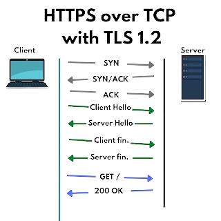
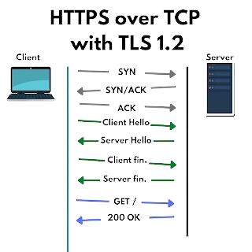

Co je to end to end šifrování?
End to end (V češtině také koncové) šifrování, je typ šifrování které uchovává zprávy šifrované a tudíž nečitelné pro všechny
včetně provozovatele dané služby. Jediní lidé kteří mají přístup ke zprávám v plaintextu tj. nezašífrovaným jsou odesílatel a příjemce.
Odesílatel je jeden "Konec/End" a příjemce je druhý "Konec/End", z toho vychází název End to end šifrování.
Můžeme si ho představit jako
poštu. Odesílatel odešle svou zprávu v zaslepené obálce. Do té pošťák ani nikdo jiný nevidí ale příjemce pečeť může porušit a přečíst si
svoji zprávu.[1]
Co je speciálního na koncovém šifrování?
Některé služby nabízí "šifrovanou komunikaci", ale ne End to end šifrování. Zpráva je sice zpočátku zašifrována když je odesílána na server,
ale když na server dorazí je dočasně odšifrována a poté je znovu zašifrována a odesláná příjemci. Nejčastěji je používaný protokol TLS.
Protokol Transport Layer Security (TLS) je kryptografický protokol poskytující možnost zabezpečené komunikace přes nedůvěryhodnou
síť (datová linka, internet). Je využíván pro služby WWW, elektronickou poštu a další datové přenosy. [2]
For processing information when the law requires it: Where we are under an obligation
to disclose information such as, for example, if we receive a valid legal request for
certain information (such as an Irish search warrant), we will access, preserve and
/ or share your information with regulators, law enforcement or others
[3]
Nevýhody nešifrovaných dat
Kdokoliv z těchto stran může mít přístup k vašim datům [4]
- Společnost vlastnící danou službu
- Ai které daná společnost může trénovat
- Třetí strany kterým jsou prodávána data za účelem reklamy
- Třetí strany kterým jsou prodávána data za účelem průzkumů
- Státní orgány a jiné zákonné složky
- Pokud dojde k úniku dat tak kdokoliv
Data mohou být ukládána nezašifrovaná a kdokoliv na internetu by se k nim mohl dostat, tohle je možná vhodné pro pár fotek nebo random tweetů (Xů),
ale tento přístup rozhodně nelze použít pro jakoukoliv citlivější konverzaci.
Představte si to jako kdyby jste si chtěli s kamarádem v soukromě popovídat,
ale pořád za vámi někdo stál a poslouchal vás.
Výhody nešifrování dat
Abych zde nebyl jen negativní. Nešifrování dat přináší i řadu výhod:
- Moderování platformy
- Je možné chránit uživatele před spamem a zavádějícím nebo jiným nevhodným obsahem.
- Je možné data prezentovat více než dvěma lidem zároveň
- Není potřeba uchovávat veřejné klíče pro každého uživatele
- Policie a stát mohou bránit organizovnému zločinu a jiním ilegálním aktivitám
Policie ČR od r. 2011 sleduje počet trestných činů spáchaných v kyberprostoru (zejm. v síti Internet). V uvedeném období je zaznamenán trend setrvalého nárůstu evidovaných
případů kybernetické kriminality (od 1 502 trestných činů v roce 2011, do 8 417 trestných činů v roce 2019).[5]
Na co se E2EE hodí a kde ji používat
Šifrování se hodí na jakoukoliv konverzaci mezi dvěma osobami kterou je potřeba zachovat soukromou. Obecně se jedná o dobrý návyk E2EE používat kdekoliv kde nám to nezpůsobí
nějakou větší obtíž.
Jedná se o jednoduchý způsob jak si zvýšit už takhle nízké digitální soukromí a také se může jednat o způsob jak předejít ředitelské důtce. 😉
Kde se E2EE nepoužívá
End to end šifrování se nepoužívá kdekoliv kde má k datům přístup více uživatelů nebo více zařízení, protože je velmi složite udrzovat
veřejné a soukromé klíče všech zařízení a ověřovat všude jejich autenticitu. Jednalo by se o velmi finančně náročnou a a složitou
implementaci. Na druhou stranu například telegram využívá E2EE i pro skupiny
Multi-device End-to-end encrypted chats are a mess
The concept of End-to-End Encryption has no limits for the number of communicating devices. However, if you want to access your end-to-end encrypted chats from multiple devices,
you’re facing many technical difficulties, especially when it comes to connecting new devices, loading chat history and restoring backups.
Most of our competitors (notably, Whatsapp and iMessage) solve these problems in ways that make their end-to-end encryption useless (this is a big topic, so requires a separate
manual). To solve them in a secure way, you’d have to sacrifice usability and some of the features you’re used to – the result would never be as fluent and simple as what we
offer in Cloud Chats.[6]
 
